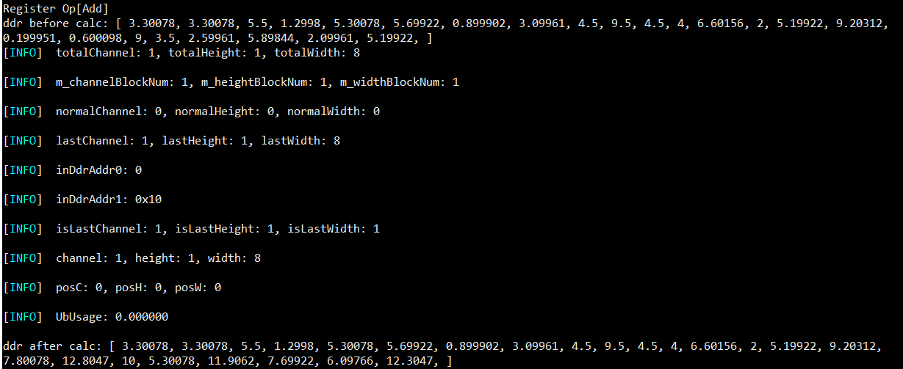
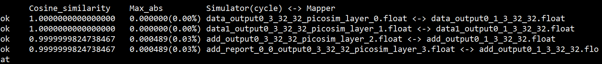

ATC 自定义算子开发
前言
本文介绍客户如何使用ATC(Advanced Tensor Compiler)提供的接口开发自定义算子，以提高网络运行效率。
与本文档相对应的产品版本如下。
说明：
本文未有特殊说明，Hi3516DV500与Hi3519DV500内容完全一致；Hi3516CV608与Hi3516CV610内容完全一致。
本文档主要适用于软件开发工程师。
掌握以下经验和技能可以更好地理解本文档：
- 熟悉Linux基本命令。
- 对机器学习、图像分析方法有一定的了解。
在本文中可能出现下列标志，它们所代表的含义如下。


使用入门
入门学习
算子基本概念
图像分析算法由一个个计算单元组成，我们称这些计算单元为算子（Operator，简称 Op）。在网络模型中，算子对应层中的计算逻辑，例如：卷积层（Convolution Layer）是一个算子；全连接层（Fully-connected Layer， FC layer）中的权值求和过程是一个算子。 以下是算子中常用的基本概念。
-
算子名称 (Name)
算子的名称，用于标志网络中的某个算子，同一网络中算子的名称需要保持唯一。
-
算子类型 (Type)
网络中每一个算子根据算子类型进行算子实现的匹配，相同类型的算子的实现逻辑相同。在一个网络中同一类型的算子可能存在多个。
-
数据排布格式 (Format)
在图像分析框架中，多维数据通过多维数组存储，比如图像分析中卷积的特征图用四维数组保存，四个维度分别为批量大小（Batch, N）、特征图高度（Height, H）、特征图宽度（Width, W）以及特征图通道（Channels, C）。 由于数据只能线性存储，因为这四个维度有对应的顺序。不同图像分析框架会按照不同的顺序存储特征图数据，比如Caffe，排列顺序为[Batch, Channels, Height, Width]，即NCHW。Tensorflow中，排列顺序为[Batch, Height, Width, Channels]， 即NHWC。
-
形状 (Shape)
张量的形状，以(D0, D1, … ,Dn-1)的形式表示，D0到Dn是任意的正整数。
发布模式使用
获取ATC工具
参考《ATC工具使用指南》"2.1.1 获取ATC工具" 小节。
获取custom样例工程
custom样例工程中，包含了Abs(cpu)和Add(npu)两个实现sample，其中Add(npu)仅支持Hi3519DV500，样例工程目录结构如下：
├── build.sh
├── caffe_model
│ ├── custom.caffemodel
│ └── custom.prototxt
├── CMakeLists.txt
├── custom_caffe_config.json
├── custom_onnx_config.json
├── data
│ ├── data_0.txt
│ └── data_0.txt.bin
├── inc
│ ├── model_process.h
│ ├── sample_process.h
│ └── utils.h
├── lib
│ ├── cmake
│ │ ├── toolchain_gcc-aarch64_glibc.cmake
│ │ ├── toolchain_gcc-aarch64_musl.cmake
│ │ └── toolchain_gcc-x86.cmake
│ ├── CMakeLists.txt
│ ├── README.md
│ └── src
│ ├── CMakeLists.txt
│ ├── common
│ │ ├── extended_utils.cpp
│ │ ├── op
│ │ │ ├── extended_op_node_base.cpp
│ │ │ ├── extended_propagation_base.cpp
│ │ │ ├── op_factory.cpp
│ │ │ ├── process_layer_factory.cpp
│ │ │ └── propagation_factory.cpp
│ │ └── parser
│ │ ├── extended_parser_base.cpp
│ │ └── op_parser_factory_base.cpp
│ ├── extended
│ │ ├── aicpu_runtime
│ │ │ ├── extended_abs_aicpu_forward.c
│ │ │ ├── extended_abs_aicpu_forward.h
│ │ │ └── extended_aicpu_forward_param.h
│ │ └── ops
│ │ ├── abs
│ │ │ ├── abs_op_node.cpp
│ │ │ ├── abs_parser.cpp
│ │ │ ├── abs_parser.h
│ │ │ ├── abs_propagation.cpp
│ │ │ └── abs_propagation.h
│ │ └── include
│ │ └── abs_op_node.h
│ └── include
│ ├── common
│ │ ├── extended_attr.h
│ │ ├── extended_forward_param.h
│ │ ├── extended_op_node_base.h
│ │ ├── extended_op_version.h
│ │ ├── extended_parser_base.h
│ │ ├── extended_propagation_base.h
│ │ ├── extended_utils.h
│ │ ├── ext_enum_def.h
│ │ ├── log.h
│ │ ├── op_factory.h
│ │ ├── op_parser_factory_base.h
│ │ └── propagation_factory.h
│ └── inst_api
│ ├── ext_process_param.h
│ ├── process_layer_base.h
│ └── process_layer_factory.h
├── onnx_model
│ └── custom.onnx
├── README.md
├── script
│ └── txt2bin.py
└── src
├── acl.json
├── CMakeLists.txt
├── main.cpp
├── model_process.cpp
├── sample_process.cpp
└── utils.cpp
设置环境变量
设置libsvp_aacpu_custom_x86.so/libsvp_aacpu_custom_aarch64.so和libsvp_custom.so相关自定义算子库环境变量。
须知：
- 使用export方式设置环境变量后，环境变量只在当前窗口有效。如果用户之前在.bashrc文件中设置过自定义算子库的环境变量，则在执行上述命令之前，需要先手动删除原来设置的自定义算子库环境变量。
- 如果用户之前在.bashrc文件中设置过之前版本自定义算子库的环境变量，则在执行atc命令之前，需要先手动删除原来设置的自定义算子库环境变量，然后设置如下环境变量。设置完成后，切换到新窗口执行atc模型转换命令。
必选环境变量（如下环境变量中${install_path}以samples软件包使用默认安装路径为例进行说明）
编译custom样例工程
直接执行./build.sh即可，生成的libsvp_custom.so库存放在${custom_dir}/output/lib目录。
运行ATC
参考《ATC工具使用指南》“2.2 转换样例”章节。
调试模式使用
调试模式仅NPU算子支持。本test样例工程提供了add算子(NPU)的测试工程，仅支持Hi3519DV500。
获取test样例工程
test工程的目录结构如下，sample中包含了两个测试用例供参考。
├── CMakeLists.txt
├── include
│ ├── add_offline_sample.h
│ ├── add_sample.h
│ ├── ext_ddr_simulator.h
│ ├── matmul_offline_sample.h
│ ├── matmul_sample.h
│ ├── topk_sample.h
│ ├── vvcmp_offline_sample.h
│ └── vvcmp_sample.h
└── src
├── layer
│ ├── add_offline_sample.cpp
│ ├── add_sample.cpp
│ ├── matmul_offline_sample.cpp
│ ├── matmul_sample.cpp
│ ├── topk_sample.cpp
│ ├── vvcmp_offline_sample.cpp
│ └── vvcmp_sample.cpp
└── main.cpp
编译test样例工程
必选环境变量
然后执行./build.sh。
执行test样例工程
编译好的可执行程序在（build.sh同级目录）lib/output/bin目录下，直接执行./layer_test即可。
算子开发流程
算子Op定义
原理
算子定义规定了算子输入、输出和属性信息，基本参数的校验和shape的推导，并注册到自定义算子库中。网络模型生成时，发现包含自定义算子，ATC会根据自定义算子接口调用创建Op方法，返回对应的自定义算子指针，可根据此指针调用接口。

其中算子注册包括OP Node注册、OP Parser注册和OP Propagation注册，注册的时候算子类型作为传入条件。
- 首先ATC接收到第三方框架的原始网络模型，并进行初始化，网络模型的拓扑图简称为图。
- 图中包含自定义算子时，会加载自定义算子.so库。
- Graph会遍历图中所有节点。
- 每个节点都会向Node发送调用方法请求shape计算函数和参数解析函数。
- 每个节点会执行CPU Propagation推理，并返回结果。
- ATC进行其他处理。
自定义算子调用时序图如图2。

算子分析
以Abs算子为例。
用户需要确定算子功能、输入、输出、算子类型以及算子实现函数名称等。
-
明确算子的功能以及数学表达式。
以Abs算子为例，Abs算子的数学表达式为：
y = abs(x)
计算过程：将输入参数取绝对值，得到结果y并将其返回。
-
明确输入和输出。
-
例如Abs算子有一个输入x，一个输出y。
- 本样例中算子的输入支持的数据类型为float32，算子输出的数据类型与输入类型相同。
- 算子输入支持所有shape，输出shape与输入shape相同。
-
算子输出支持的format为：NCHW。
-
明确算子实现文件名称以及算子的类型(OpType)。
-
算子类型采用大驼峰的命名方式，即采用大写字符区分不同的语义。
- 算子文件名称，可采用如下命名规则：
- 首字符的大写字符转换成小写字符，如Abs -> abs
- 小写字符后的大写字符转换成下划线+小写字符，如 AbsNode -> abs_node
因此本例中，算子类型定义为Abs，算子的实现文件名称为abs，因此各个文件名称建议命名如下：
- 算子的opNode文件命名为abs_op_node.h与abs_op_node.cpp
- 算子的解析文件命名为abs_parser_caffe.h与abs_parser_caffe.cpp
- 算子的推理文件命名为abs_propagation.h与abs_propagation.cpp
- 算子的runtime文件命名为extended_abs_aacpu_forward.h与extended_abs_aacpu_forward.c
通过以上分析，得到Abs算子的设计规格如下：
工程创建
用户可以基于提供的自定义算子样例工程进行修改，新增自定义算子。
目录结构介绍：
算子工程目录结构如下所示，请基于如下规则在对应目录下进行自定义算子开发：
├── extended
│ ├── aacpu_runtime // 存放算子的CPU实现
│ │ ├── extended_abs_aacpu_forward.c
│ │ ├── extended_abs_aacpu_forward.h
│ │ └── extended_aacpu_forward_param.h // CPU推理参数文件
│ └── ops // 存放算子定义文件、解析文件和推理文件
│ ├── abs
│ │ ├── abs_op_node.cpp
│ │ ├── abs_parser.cpp
│ │ ├── abs_parser.h
│ │ ├── abs_propagation.cpp
│ │ └── abs_propagation.h
│ └── include
│ └── abs_op_node.h
算子代码实现
自定义算子的实现包括以下部分：
-
OpNode类的实现，需要继承ExtendedOpNodeBase基类。必须实现如下接口。
- Parser：创建对应自定义算子Op的Parse指针并返回。参考“Parser”。
- CalcDataShape：计算输入输出数据的shape信息。参考“CalcDataShape”。
- GetIsAacpuOp：获取自定义算子Op的属性，CPU算子或NPU算子。参考“GetIsAAcpuOp”。
-
Parser类的实现，需要继承ExtendedParserBase基类。必须实现如下接口：
ParseParam：对自定义算子的参数进行解析。参考“ParseParam”。
-
Propagation类的实现，需要继承ExtendedPropagationBase基类。必须实现如下接口：
- PrePare：准备校准推理的参数。参考“Prepare”。
- ForwardCpu：根据传入的推理参数进行校准推理。参考“ForwardCpu”。
若为CPU算子，需实现算子的CPU下的计算函数详见“Cpu Sample介绍”。
若为NPU算子，需实现XXXProcessLayer类，详见“NPU Sample介绍”。
算子工程编译部署
简介
自定义算子开发完成后，需要对算子工程进行编译，编译出ATC转换模型依赖的libsvp_custom.so，指令仿和功能仿依赖的libsvp_aacpu_custom_x86.so，板端ACL依赖的libsvp_aacpu_custom_aarch64.so。详细的编译部署流程如图1所示。

所有自定义算子需要在同一算子工程进行编译，编译成ATC加载调用的.so库。
算子工程编译
算子源码开发完成后，需要对算子工程进行编译，生成自定义算子库，包括libsvp_custom.so和libsvp_aacpu_custom_x86.so/libsvp_aacpu_custom_aarch64.so。
- 环境准备，配置gcc编译环境，CMake最低版本要求为3.5.1。
-
当开发环境与运行环境操作系统架构相同时，执行如下命令编译程序。
指令仿真：
./build.sh inst
功能仿真：
./build.sh func
-
当开发环境与运行环境操作系统架构不同时，执行以下命令进行交叉编译：
./build.sh
默认的交叉编译链为musl环境; 如果想切换编译链为glibc环境，执行脚本为：
./build.sh board glibc
-
ATC使用的libcustom.so和仿真工具使用的libsvp_aacpu_custom_x86.so编译环境一致。
- 编译成功后，会在当前目录创建output目录，并在output/lib下生成libsvp_custom.so和libsvp_aacpu_custom_x86.so/libsvp_aacpu_custom_aarch64.so库。
-
配置自定义算子库环境变量，供ATC加载使用，命令如下：
export LD_LIBRARY_PATH=xxx/output/lib:$LD_LIBRARY_PATH
-
板端执行带有自定义cpu算子库时，通过二级调用libsvp_aacpu_custom_aarch64.so库进行推理，仿真工具执行带有自定义cpu算子库时，通过二级调用libsvp_aacpu_custom_x86.so库进行推理。
- 当前支持自定义算子的模块有ATC，指令仿真，板端推理。功能仿真暂时不支持NPU自定义算子，工具当前不支持自定义算子。
- 自定义算子输出节点个数最大为30。
接口参考
通用参数
ExtendedAttr类
ExtendedAttr构造函数和析构函数
功能描述：
ExtendedAttr构造函数和析构函数。
接口原型：
GetExtendedParam
功能描述：
获取自定义算子参数。
接口原型：
返回值说明：
ExtendedParam，自定义算子参数。
枚举类型
功能描述：枚举类型，表征参数属性。
结构体类型
功能描述：结构体类型，表征参数的值。
Propagation推理参数
ExtendedBuffer
功能描述：自定义buffer类型。
ExtendedDataInfo
功能描述：自定义data信息。
ExtendedDataInfoContainer
功能描述：自定义dataInfo信息。
ExtendedForwardParam
功能描述：自定义forward参数。
通用接口
ExtendedOpNodeBase类
ExtendedOpNodeBase构造函数和析构函数
功能描述：
ExtendedOpNodeBase构造函数和析构函数。
接口原型：
Parser
功能描述：
获取算子parser对象。
接口原型：
返回值说明：
返回算子Parser指针。
CalcDataShape
功能描述：
计算Shape信息。
接口原型：
virtual int32_t CalcDataShape(const vector<vector<int32_t>>& bottomShapeVec, vector<vector<int32_t>>& topShapeVec);
返回值说明：
int32_t，shape信息是否计算成功，返回0表示成功。
CheckSpecification
功能描述：
检查算子规格是否支持。
接口原型：
返回值说明：
int32_t，返回0表示成功。
SetIsAacpuOp
功能描述：
设置CPU算子flag。
接口原型：
GetIsAAcpuOp
功能描述：
获取CPU算子flag。
接口原型：
返回值说明：
bool，返回true代表是CPU算子，返回false代表不是CPU算子。
SetOpName
功能描述：设置算子名称。
接口原型：
GetOpName
功能描述：获取算子名称。
接口原型：
返回值说明：
string，算子名称。
ExtendedParserBase类
ExtendedParserBase构造函数和析构函数
功能描述：
ExtendedParserBase构造函数和析构函数。
接口原型：
ParseParam
功能描述：解析参数。
接口原型：
virtual int32_t ParseParam(const shared_ptr<ExtendedOpNodeBase> op, const std::vector<ExtendedAttr> &extendedAttrs);
返回值说明：
int32_t，返回0代表解析参数成功，返回非0代表解析参数失败。
ExtendedPropagationBase类
ExtendedPropagationBase构造函数和析构函数
功能描述：
ExtendedPropagationBase构造函数和析构函数。
接口原型：
Forward
功能描述：执行推理。
接口原型：
返回值说明：
int32_t，返回0代表推理成功，返回非0代表推理失败。
Init
功能描述：
初始化。
接口原型：
返回值说明：
int32_t，返回0代表初始化成功，返回非0代表初始化失败。
Prepare
功能描述：
参数读取配置。
接口原型：
返回值说明：
Int32_t，返回0代表参数读取配置成功，返回非0代表参数读取配置失败。
ForwardCpu
功能描述：
执行Cpu推理。
接口原型：
返回值说明：
int32_t，返回0代表Cpu推理成功，返回非0代表Cpu推理失败。
GetStride
功能描述：
获取stride值。
接口原型：
返回值说明：
vector<int32_t>，输出shape每一个维度的stride值。
GetactivateProp
功能描述：
获取激活函数推理对象指针。
接口原型：
返回值说明：
shared_ptr<ExtendedPropagationBase>，ExtendedPropagationBase对象指针。
UTILS API
UTILS是自定义算子动态库对外接口，包括创建自定算子Op。提供了一系列API供开发者进行开发，参考接口总览。
CreateOpNode
功能描述：
创建自定义算子Op。
接口原型：
返回值说明：
shared_ptr<ExtendedOpNodeBase>，自定义算子Op对象指针。
GetLibVersion
功能描述：
获取自定义算子库版本值。
接口原型：
返回值说明：
int64_t，版本值。
CPU推理参数
ExtendedAAcpuBuffer
功能描述：自定义cpu buffer。
ExtendedAAcpuDataInfo
功能描述：自定义cpu data信息。
ExtendedAAcpuDataInfoContainer
功能描述：自定义dataInfo信息。
ExtendedAAcpuForwardParam
功能描述：自定义forward参数。
NPU参数及接口
Hi3516CV610不支持NPU自定义算子。
数据结构定义
Scalar
功能说明
定义Scalar变量。
数据类型定义
函数原型
- Scalar();
- explicit Scalar(const std::string &name);
- Scalar(ExtOpDataType opDataTye, const std::string &name = "", int32_t initVal = 0);
- Scalar(Scalar &scalar, const std::string &name = "");
- Scalar(uint32_t val, const std::string &name = "");
- Scalar(int32_t val, const std::string &name = "");
约束
标量运算时，ExtOpDataType仅支持EXT_OP_DTYPE_S32和EXT_OP_DTYPE_U32。向量运算时，支持EXT_OP_DTYPE_F16类型。
标量运算
支持的算术运算如下：
Scalar a(10);
Scalar b;
Scalar c;
c = a + b;
c = a + 10;
c = a – b;
c = a – 10;
c = 10 – b;
c = a*b;
c = 10*a;
c = a/b;
c = a/10;
c = 10/a;
c = a % b;
c = a %10;
c = 10 %a;
c++;
++c;
c--;
--c;
关系运算需和控制语句配合使用。支持的关系运算如下：
Scalar a(10);
Scalar b;
a == b;
a == 10;
a != b;
a != 10;
a > b;
a > 10;
a < b;
a < 10;
a >= b;
a >= 10;
a <= b;
a <= 10;
Scalar a(10);
Scalar b;
Scalar c;
c = a | b;
c = a | 0xff;
c = a & b;
c = a & 0xff;
c = ~b;
c = b >> a;
c = b >> 1;
c = b << a;
c = b << 1;
Scalar a(10);
Scalar b;
b = a;
b &= a;
b &= 0xff;
b |= a;
b |= 0xff;
b ^= a;
b ^= 0xff;
b <<= a;
b <<= 2;
b >>= a;
b >>= 2;
Scalar a(10);
Scalar b;
Scalar c;
c.Max(a, b); // c = MAX(a, b);
c.Max(a, 10);
c.Max(10, a);
c.Min(a, b);
c.Min(a, 10);
c.Min(10, a);
调试接口
功能描述：在simulator调试模式场景时，获取当前Scalar变量的值，在板端场景时，该接口返回的值无效。
接口原型：
返回值说明：当前Scalar变量的值。
功能描述：在simulator调试模式场景时，获取当前Scalar变量的float值（如果当前Scalar数据类型为EXT_OP_DTYPE_F16，则内部会将EXT_OP_DTYPE_F16的值转化成float再返回），在板端场景时，该接口返回的值无效。
接口原型：
float GetValF();
返回值说明：当前Scalar变量的float值
调用示例
// 定义一个匿名Scalar变量a，初始值为0，数据类型为EXT_OP_DTYPE_S32
Scalar a;
// 定义一个Scalar变量b，名称为"b", 初始值为0，数据类型为EXT_OP_DTYPE_S32
Scalar b("b");
// 定义一个Scalar变量c，名称为"c", 初始值为10，数据类型为EXT_OP_DTYPE_U32
Scalar c(EXT_OP_DTYPE_U32, "c", 10);
// 定义一个Scalar变量d，名称为"d", 初始值为10，数据类型为EXT_OP_DTYPE_S32
uint32_t initVal = 10;
Scalar d(initVal, "d");
// 定义一个Scalar变量e，名称为"e", 初始值为-10，数据类型为EXT_OP_DTYPE_S32
Scalar e(-10, "e");
// 返回-10
int32_t eVal = e.GetVal();
Scalar变量资源有限，同时存在最多32个Scalar变量，非必要请尽量避免使用全局Scalar变量。
Tensor
功能说明
定义Tensor变量。
数据类型定义
函数原型
- Tensor();
- Tensor(ExtOpDataType dataType, std::vector<int32_t> &dimVec, MemScope memScope, const std::string &name = "Tensor");
- Tensor(ExtOpDataType dataType, std::vector<int32_t> &dimVec, uint64_t ddrAddr, const std::string &name = "Tensor");
- Tensor(ExtOpDataType dataType, std::vector<int32_t> &dimVec, Scalar& ddrAddr, const std::string &name = "Tensor");
参数说明
指定Tensor内存类型范围，支持DDR，UB。接口Tensor(ExtOpDataType dataType, std::vector<int32_t> &dimVec, MemScope memScope, std::string name = "Tensor"); 不建议定义DDR内存，因为此时不能确定DDR地址。 |
||
支持操作
功能：从TensorA中抠出一个小TensorB，该功能仅在Tensor处于DDR中时有效。如图1所示。

接口原型：
Tensor GetSubTensor(std::vector<int32_t> &pos, std::vector<int32_t> &len, const std::string &name = "Tensor");
Tensor GetSubTensor(std::vector<std::shared_ptr<Scalar>> &pos, std::vector<int32_t> &len, const std::string &name = "Tensor");
指定抠出的TensorB的维度，len的维度不能超过3维，且需与TensorA的维度个数一样，TensorB必须在TensorA范围内。 |
||
返回值：返回TensorB。
功能：获取当前Tensor的N维度，当前仅支持1.
接口原型：
返回值：返回Tensor的N维度。
功能：
获取当前Tensor的C维度，当Tensor在DDR中时，取值范围为[1, 65536)；当Tensor在UB中时，取值范围为[1, 65536)，且GetChannel() * GetHeight() * GetWidth()也满足取值范围[1, 65536)。
接口原型：
返回值：返回Tensor的C维度。
功能：
获取当前Tensor的H维度，当Tensor在DDR中时，取值范围为[1, 65536)；当Tensor在UB中时，取值范围为[1, 65536)，且GetChannel() * GetHeight() * GetWidth()也满足取值范围[1, 65536)。
接口原型：
返回值：返回Tensor的H维度。
功能：
获取当前Tensor的W维度，当Tensor在DDR中时，取值范围为[1, 65536)；当Tensor在UB中时，取值范围为[1, 65536)，且GetChannel() * GetHeight() * GetWidth()也满足取值范围[1, 65536)。
接口原型：
返回值：返回Tensor的W维度。
数据结构定义：
功能：
设置量化参数，可通过tensor.SetQuantParam()设置量化参数。
设置不同的量化参数会影响到精度，需要设置合理的量化参数。
接口原型：
从FP16到S8的量化参数，默认alpha=1.0，bias=0.0，其中bias为仅能设置为0。针对matmul自定义算子，有两路量化参数：alpha0/bias0把矩阵A量化成S8数据，alpha1/bias1把矩阵B量化成S8数据；同时，有一路反量化参数：alpha2/bias2把矩阵乘结果矩阵C反量化成FP16数据；其关系为：alpha2 = 1 / (alpha0 * alpha1)。 |
调试接口
功能：
获取当前Tensor的数据，会将Tensor数值转换成float返回，仅在调试模式时有效。
接口原型：
返回值：当前Tensor的float格式数据。
功能：
获取当前Tensor的数据，会将Tensor数值转换成float格式的字符串返回，仅在调试模式时有效。
接口原型：
返回值：当前Tensor的float格式数据的字符串。
调用示例
// 定义一个DDR中的Tensor a, 维度为{8,10,10},ddr地址为0x100，名称为“TensorA”
std::vector<int32_t> dimVec = {8, 10, 10};
Tensor a(EXT_OP_DTYPE_F16, dimVec, 0x100, “TensorA”);
// 从TensorA中抠出TensorB。
std::vector<int32_t> pos = {2, 3, 4};
std::vector<int32_t> len = {4, 3, 2}
Tensor b = a.GetSubTensor(pos, len, “TensorB”);
// 从TensorA中抠出TensorC，pos为Scalar值
std::vector<shared_ptr<Scalar>> posOnline(3);
posOnline[0] = make_shared<Scalar>(EXT_OP_DTYPE_S32, "scalar0", pos[0]);
posOnline[1] = make_shared<Scalar>(EXT_OP_DTYPE_S32, "scalar1", pos[1]);
posOnline[2] = make_shared<Scalar>(EXT_OP_DTYPE_S32, "scalar2", pos[2]);
Tensor c = TensorA.GetSubTensor(posOnline, len, “TensorC”);
// 定义一个UB中的TensorD
Tensor d(EXT_OP_DTYPE_F16, dimVec, UB, “TensorD”);
// 获取TensorD的N, num为1
int32_t num = d.GetNum();
// 获取TensorD的C, channel为8
int32_t num = d.GetChannel();
// 获取TensorD的H, num为10
int32_t num = d.GetHeight();
// 获取TensorD的W, num为10
int32_t num = d.GetWidth();
// 定义UB中的TensorA, TensorB, TensorC
Tensor tensorUbMatrixA(EXT_OP_DTYPE_F16, lenMatrixA, UB, "ub0");
Tensor tensorUbMatrixB(EXT_OP_DTYPE_F16, lenMatrixB, UB, "ub1");
Tensor tensorUbMatrixC(EXT_OP_DTYPE_F16, lenMatrixResult, UB, "matmul");
// 设置量化参数
std::vector<ExtQuantParam> quantParams;
ExtQuantParam quantParam = {0.0, 0.0};
// 矩阵A量化参数
quantParam.alpha = 10.0;
quantParam.bias = 0.0;
quantParams.push_back(quantParam);
// 矩阵B量化参数
quantParam.alpha = 10.0;
quantParam.bias = 0.0;
quantParams.push_back(quantParam);
// 矩阵乘结果矩阵C的反量化参数
quantParam.alpha = 0.01; // 需要满足 1 / (10.0 * 10.0)
quantParam.bias = 0.0;
quantParams.push_back(quantParam);
// 传到ExtProcessLayerParam中
ExtProcessLayerParam layerParam;
layerParam.quantParams = quantParams;
// 量化参数设置设置到tensor中
tensorUbMatrixA.SetQuantParam(m_layerParam->quantParams[0]); // set quantA
tensorUbMatrixB.SetQuantParam(m_layerParam->quantParams[1]); // set quantB
tensorUbMatrixC.SetQuantParam(m_layerParam->quantParams[2]); // set ltpC
程序控制
简介
本章节介绍自定义算子中用于控制程序跳转的控制语句，包括if和while逻辑。
if和while语句使用前，均需先调用EXT_CONTROLLER(ctrl)定义一个ctrl对象。
if
if中的condition可以为Scalar变量之间或int变量之间的关系运算符，如>,<,==,!=,>=,<=。
if
使用示例：
if-else if
使用示例：
EXT_CONTROLLER(ifCtrl);
EXT_CTRL_IF(ifCtrl, condition1) {
// if process
} EXT_CTRL_ELSEIF(ifCtrl, condition2) {
// else process
} EXT_CTRL_ENDIF(ifCtrl);
if-else
使用示例：
EXT_CONTROLLER(ifCtrl);
EXT_CTRL_IF(ifCtrl, condition) {
// if process
} EXT_CTRL_ELSE(ifCtrl) {
// else process
} EXT_CTRL_ENDIF(ifCtrl);
if-elseif-..-else
使用示例：
EXT_CONTROLLER(ifCtrl);
EXT_CTRL_IF(ifCtrl, condition1) {
// if process
} EXT_CTRL_ELSEIF(ifCtrl, condition2) {
// else process
} EXT_CTRL_ELSE(ifCtrl) {
// else process
} EXT_CTRL_ENDIF(ifCtrl);
while
while语句中的condition可以为Scalar变量之间或int变量之间的关系运算符，如>,<,==,!=,>=,<=。
while
使用示例：
EXT_CONTROLLER(whileCtrl);
EXT_CTRL_WHILE(whileCtrl, condition) {
// while process
} EXT_CTRL_WHILE_END(whileCtrl);
while-break
使用示例：
EXT_CONTROLLER(whileCtrl);
EXT_CTRL_WHILE(whileCtrl, condition1) {
// while process
EXT_CTRL_BREAK_IF(whileCtrl, condition2) {
// break process
}
} EXT_CTRL_WHILE_END(whileCtrl);
接口定义
数据类型定义
enum ExtInstBaseAddrType {
EXT_BASE_TYPE_INST_BASE = 0,
EXT_BASE_TYPE_TEMP_BASE = 1,
EXT_BASE_TYPE_NO_BASE = 4
};
离线数据接口
GetOfflineParamAddr
功能描述：获取离线输入的地址。
接口原型：
离线输入的index编号，由extProcessLayerParam.offlineParams中的vector序号决定。 |
||
返回值说明：
int32_t，获取离线输入地址是否成功，0表示成功，非0表示失败。
数据加载接口
Load
功能描述：从DDR空间(支持从TmpBuf，om空间)Load Tensor到Ub的TensorResult中，如果有多路输入，可以通过多次调用Load接口来实现。
接口原型：
表示当前DDR中的Tensor在DDR的哪一片空间，支持EXT_BASE_TYPE_INST_BASE和EXT_BASE_TYPE_TEMP_BASE。 一般，在线的Featuremap数据在EXT_BASE_TYPE_TEMP_BASE中，离线的参数和数据在EXT_BASE_TYPE_INST_BASE中。 |
||
返回值说明：
int32_t，执行指令是否成功，0表示成功，非0表示失败。
LoadMatrix
功能描述：从DDR空间(支持从TmpBuf，om空间)Load Matrix到Ub的TensorResult中，如果有多路输入，可以通过多次调用LoadMatrix接口来实现。
接口原型：
表示当前DDR中的Tensor在DDR的哪一片空间，支持EXT_BASE_TYPE_INST_BASE和EXT_BASE_TYPE_TEMP_BASE。 一般，在线的Featuremap数据在EXT_BASE_TYPE_TEMP_BASE中，离线的参数和数据在EXT_BASE_TYPE_INST_BASE中。 |
||
返回值说明：
int32_t，执行指令是否成功，0表示成功，非0表示失败。
数据存储接口
Store
功能描述：从UB空间Store Tensor到DDR的TensorResult中，如果有多路输出，可以通过多次调用Store接口来实现。
接口原型：
返回值说明：
int32_t，执行指令是否成功，0表示成功，非0表示失败。
数据运算接口
说明：以下所涉及Vv接口，均需要保持tensor0和tensor1的维度一致。
VvAdd
功能描述：
实现两个Tensor逐点相加的功能：tensorResult[i] = tensor0[i] + tensor1[i]。
接口原型：
返回值说明：
int32_t，执行指令是否成功，0表示成功，非0表示失败。
VvSub
功能描述：
实现两个Tensor逐点相减的功能：tensorResult[i] = tensor0[i] - tensor1[i]。
接口原型：
返回值说明：
int32_t，执行指令是否成功，0表示成功，非0表示失败。
VvMul
功能描述：
实现两个Tensor逐点相乘的功能：tensorResult[i] = tensor0[i] * tensor1[i]。
接口原型：
返回值说明：
int32_t，执行指令是否成功，0表示成功，非0表示失败。
VvDiv
功能描述：
实现两个Tensor逐点相除的功能：tensorResult[i] = tensor0[i] / tensor1[i]。
接口原型：
返回值说明：
int32_t，执行指令是否成功，0表示成功，非0表示失败。
VvMax
功能描述：
实现两个Tensor逐点求较大值的功能：tensorResult[i] = max(tensor0[i], tensor1[i])。
接口原型：
返回值说明：
int32_t，执行指令是否成功，0表示成功，非0表示失败。
VvMin
功能描述：
实现两个Tensor逐点求较小值的功能：tensorResult[i] = min(tensor0[i], tensor1[i])。
接口原型：
返回值说明：
int32_t，执行指令是否成功，0表示成功，非0表示失败。
VDivS
功能描述：
实现a除以tensor中的各元素：tensorResult[i] = a / tensor[i]。
接口原型：
返回值说明：
int32_t，执行指令是否成功，0表示成功，非0表示失败。
VSEmadS
功能描述：
tensor所有元素进行a*x+b操作：tensorResult[i] = a * tensor[i] + b。
接口原型：
返回值说明：
int32_t，执行指令是否成功，0表示成功，非0表示失败。
VSEmadFaSb
功能描述：
tensor所有元素进行a*x+b操作：tensorResult[i] = a * tensor[i] + b。
接口原型：
返回值说明：
int32_t，执行指令是否成功，0表示成功，非0表示失败。
VSEmadSaFb
功能描述：
tensor所有元素进行a*x+b操作：tensorResult[i] = a * tensor[i] + b。
接口原型：
返回值说明：
int32_t，执行指令是否成功，0表示成功，非0表示失败。
VSigmoid
功能描述：
tensor所有元素进行Sigmoid操作：tensorResult[i] = Sigmoid(tensor[i])。
接口原型：
返回值说明：
int32_t，执行指令是否成功，0表示成功，非0表示失败。
VTanh
功能描述：
tensor所有元素进行Tanh操作：tensorResult[i] = Tanh(tensor[i])。
接口原型：
返回值说明：
int32_t，执行指令是否成功，0表示成功，非0表示失败。
VExp
功能描述：
tensor所有元素进行Exp操作：tensorResult[i] = e^(tensor[i])。
接口原型：
返回值说明：
int32_t，执行指令是否成功，0表示成功，非0表示失败。
Vlog
功能描述：
tensor所有元素进行Ln操作：tensorResult[i] = ln(tensor[i])。
接口原型：
返回值说明：
int32_t，执行指令是否成功，0表示成功，非0表示失败。
VSqrt
功能描述：
tensor所有元素进行开平方操作：tensorResult[i] = sqrt(tensor[i])。
接口原型：
返回值说明：
int32_t，执行指令是否成功，0表示成功，非0表示失败。
VDivF
功能描述：
实现a除以tensor中的各元素：tensorResult[i] = a / tensor[i]。
接口原型：
返回值说明：
int32_t，执行指令是否成功，0表示成功，非0表示失败。
VSEmadF
功能描述：
tensor所有元素进行a*x+b操作：tensorResult[i] = a * tensor[i] + b。
接口原型：
返回值说明：
int32_t，执行指令是否成功，0表示成功，非0表示失败。
VSum
功能描述：
tensor所有元素求和: result = ∑tensor[i]。
接口原型：
返回值说明：
int32_t，执行指令是否成功，0表示成功，非0表示失败。
VMax
功能描述：
tensor所有元素取最大值: result = max(tensor)；resultIdx: result在tensor中的位置。
接口原型：
返回值说明：
int32_t，执行指令是否成功，0表示成功，非0表示失败。
VMin
功能描述：
tensor所有元素取最小值: result = min(tensor)；resultIdx: result在tensor中的位置。
接口原型：
返回值说明：
int32_t，执行指令是否成功，0表示成功，非0表示失败。
VVMad
功能描述：
tensor0和tensor1拉成向量后求内积：result = [tensorVec0] · [tensorVec1]。
接口原型：
返回值说明：
int32_t，执行指令是否成功，0表示成功，非0表示失败。
Matmul
功能描述：
对tensor0和tensor1T做矩阵乘：result = [tensor0] · [tensor1]，其中tensor1中的数据为转置后的数据。
接口原型：
int32_t Matmul(Tensor& result, const Tensor& tensor0, const Tensor& tensor1, int32_t m, int32_t k, int32_t n);
返回值说明：
int32_t，执行指令是否成功，0表示成功，非0表示失败。
调用Matmul接口之前，需要通过tensor设置合理的量化参数，通过3.4.1.2.5.1 SetQuantParam接口添加；或者参考4.2.4.1 Prototxt定义，在prototxt中添加量化参数。
Vvcmp
Hi3516CV610不支持。
功能描述：
对输入的两个向量逐个元素比较两个tensor大小，满足条件（由用户指定）者相应元素为16'hffff，否则为16'h0000，并写入到指定的地址，支持六种比较模式设置：0: EQ, 1: NE, 2: LT, 3: GT, 4: GE, 5: LE。
接口原型：
六种比较模式（用户可设置）：0: EQ（等于）, 1: NE（不等于）, 2: LT（小于）, 3: GT（大于）, 4: GE（大于等于）, 5: LE（小于等于）。 |
||
返回值说明：
int32_t，执行指令是否成功，0表示成功，非0表示失败。
topK
Hi3516CV610不支持。
功能描述：
对输入的数据以及对应的索引求前K个最大值，以及输出其前K个最大值对应的索引。
接口原型：
int32_t TopK(Tensor &result, Tensor &indexResult, const Tensor &tensor, const Tensor &indexTensor, uint32_t topK);
UB中的索引Tensor，仅支持EXT_OP_DTYPE_F16。支持输入索引量[1, 51200]，其索引会有索引精度损失。 |
||
返回值说明：
int32_t，执行指令是否成功，0表示成功，非0表示失败。
利用率统计接口
功能描述：
统计当前算子运算过程中的最大Ub利用率，该接口仅在发布模式时有效。
接口原型：
返回值说明：
float，UB利用率，取值范围为[0,1]。
DDR调试接口
功能说明：调试模式时，模拟DDR空间。
InitSpace
功能：初始化DDR空间。
接口原型：
GetSpaceSize
功能：获取当前DDR空间大小。
接口原型：
返回值说明：
uint32_t, 当前DDR空间大小，单位为byte。
InitDataRandom
功能：初始化DDR空间内的值。
接口原型：
InitData
功能：初始化DDR空间内的值。
接口原型：
初始化的DDR值中的值，内部会转换成EXT_OP_DTYPE_F16进行初始化，data的元素个数必须等于ddr空间byte数的一半。 |
SetOfflineParamAddr
功能：设置离线参数的DDR地址。
接口原型：
GetOfflineParamAddr
功能：获取离线参数地址。
接口原型：
返回值说明：
uint32_t, 索引为idx的离线参数的DDR地址。
GetDdrSpace
功能：获取对应地址长度的DDR空间的值。
接口原型:
SetDdrSpace
功能：设置对应地址长度的DDR空间的值。
接口原型：
PrintSpace To String
功能：输出对应地址长度的DDR空间的值到string中。
接口原型：
返回值说明：
std::string 返回的string值。
PrintSpace To File
功能：输出对应地址长度的DDR空间的值到文件中。
接口原型：
Sample介绍
Cpu Sample介绍
Prototxt定义
Abs算子的prototxt定义如下，需要制定type为Custom类型，并指定custom_param，custom_param中extended_op_type为必填字段，attribute为可选字段。
layer {
name: "abs"
type: "Custom"
bottom: "data"
top: "abs"
custom_param {
extended_op_type: "Abs"
attribute {
name: "ExtendedAbs"
}
}
}
Custom工程开发
Custom工程中，增加Abs目录，并增加opNode，Parser，Propagation，cpu推理模块。
AbsOpNode
AbsOpNode继承自ExtendedOpNodeBase。
实现的功能主要包括：
- 实现CalcDataShape()接口。
- 实现DataShape推导。
AbsParser
AbsParser继承自ExtendedParserBase。功能是解析ExtendedAttr。
Propagation
AbsPropagation继承自ExtendedPropagationBase。主要实现ForwardCpu接口，作为atc simulator的运算结果。
AbsCpuForward
AbsCpuForward是实现abs的cpu推理接口，实现float的计算，供ATC的cpu库二级调用实现自定义算子的cpu推理。
仿真工程运行结果
仿真工程测试
测试代码流程：
- 准备data数据。
- 使用ATC工具转换caffe模型生成om，可参考Custom Sample的README文档。
- 仿真运行om进行推理，得到输出结果。
板端工程测试
参考“调试模式使用”。
NPU Sample介绍
Hi3516CV610不支持NPU自定义算子。
Add sample
Prototxt定义
-
Add算子的prototxt定义如下，需要制定type为Custom类型，并指定custom_param，custom_param中extended_op_type为必填字段，attribute为可选字段。
-
在onnx框架下，Abs算子定义如下，op_type必须需加上前缀Extend。
Custom工程开发
Custom工程中，增加Add目录，并增加opNode，Parser，Propagation，ProcessLayer模块。
AddOpNode
AddOpNode继承自ExtendedOpNodeBase。
实现的功能主要包括：
- 实现CalcDataShape()接口
- 实现DataShape推导
AddParser
AddParser继承自ExtendedParserBase。功能是解析ExtendedAttr。
Propagation
AddPropagation继承自ExtendedPropagationBase。主要实现ForwardCpu接口，作为atc simulator的运算结果。
int32_t AddPropagation::ForwardCpu(ExtendedForwardParam& forwardParam)
{
if (forwardParam.input.num != 2 && !(forwardParam.input.num == 1 && m_opNode->GetOfflineArgSize() == 1)) {
ERROR_LOG("input.num %d should be 2\n", forwardParam.input.num);
return -1;
}
ExtendedDataInfo* inputDataInfo = forwardParam.input.dataInfo;
auto inputData0 = static_cast<float*>(inputDataInfo[0].buffer.data);
float *inputData1 = nullptr;
if (forwardParam.input.num == 2) {
// inputData1为在线输入，直接从inputDataInfo[1]中获取数据。
inputData1 = static_cast<float*>(inputDataInfo[1].buffer.data);
} else {
// inputData1为离线输入，从OfflineArgs中获取数据。
OfflineParamPair &offlineParamPair = m_opNode->GetOfflineArgs(0);
inputData1 = offlineParamPair.first.data();
}
uint32_t* inShape = inputDataInfo[0].shape;
uint64_t inCount = 1;
for (uint32_t i = 0; i < inputDataInfo[0].dimNum ; i++) {
inCount *= inShape[i];
}
ExtendedDataInfo* outputDataInfo = forwardParam.output.dataInfo;
auto outputData = static_cast<float*>(outputDataInfo[0].buffer.data);
for (uint64_t i = 0; i < inCount; i++) {
outputData[i] = inputData0[i] + inputData1[i];
}
return 0;
}
AddProcessLayer
AddProcessLayer继承自ProcessLayerBase，实现Add的指令层，用于生成om。
AddProcessLayer中需要实现切块，运算等功能。
示例中的AddProcessLayer处理了双输入Add算子，其中第0路输入一定是在线输入，第1路输入可以为在线输入，也可以为离线输入。
仿真工程运行结果
仿真测试工程测试
测试代码流程：
- 填充LayerParam；
- 初始化DDR空间；
- 调用AddProcessLayer接口。
在线输入测试用例：
int32_t TestAddProcessLayer()
{
// 初始化LayerParam
ExtProcessLayerParam layerParam;
layerParam.inShapeVec.resize(2);
layerParam.inShapeVec[0] = {1, 1, 1, 8};
layerParam.inShapeVec[1] = {1, 1, 1, 8};
layerParam.outShapeVec.resize(1);
layerParam.outShapeVec[0] = {1, 1, 1, 8};
layerParam.inDdrAddr.resize(2);
layerParam.inDdrAddr[0] = 0;
layerParam.inDdrAddr[1] = 0x10;
layerParam.outDdrAddr.resize(1);
layerParam.outDdrAddr[0] = 0x20;
layerParam.tmpDdrAddr = 0x20;
layerParam.name = "Add";
// 初始化DDR空间
ExtDdrSimulator::GetInstance().InitSpace(48);
ExtDdrSimulator::GetInstance().InitDataRandom();
// 打印DDR空间
std::cout << "ddr before calc: " << ExtDdrSimulator::GetInstance().PrintSpace(0, 48);
// 调用AddProcessLayer
AddProcessLayer addLayer;
addLayer.ProcessLayer(layerParam);
// 打印DDR空间
std::cout << "ddr after calc: " << ExtDdrSimulator::GetInstance().PrintSpace(0, 48);
return 0;
}
运行结果：

板端工程运行测试
板端测试流程：
- 参考“设置环境变量”；
- 参考“编译custom样例工程”；
- 执行ATC，运行流程与其它非custom用例一样。
板端用例与AddPropagation运行相似度对比结果：

Matmul sample
Prototxt定义
Matmul算子的prototxt定义如下，需要制定type为Custom类型，并指定custom_param，custom_param中extended_op_type为必填字段，attribute为可选字段。
layer {
name: "matmul"
type: "Custom"
bottom: "data0"
bottom: "data1"
top: "matmul"
custom_param {
extended_op_type: "Matmul"
attribute {
name: "operator"
type: STRING
s: "MATMUL"
}
attribute {
name: "dims"
s: " "
type: STRING
}
attribute {
name: "value"
s: " "
type: STRING
}
attribute {
name: "quant"
s: " "
type: STRING
}
}
}
Custom工程开发
MatmulOpNode
MatmulOpNode继承自ExtendedOpNodeBase。
实现的功能主要包括：
- 实现CalcDataShape()接口
- 实现DataShape推导
- 实现GetExtraAddeSize()接口
MatmulParser
MatmulParser继承自ExtendedParserBase。功能是解析ExtendedAttr。
MatmulPropagation
MatmulPropagation继承自ExtendedPropagationBase。主要实现ForwardCpu接口，作为atc simulator的运算结果。
MatmulProcessLayer
MatmulProcessLayer继承自ProcessLayerBase，实现Matmul的指令层，用于生成om。
MatmulProcessLayer中需要实现切块，运算等功能。
示例中的MatmulProcessLayer处理了双输入Matmul算子，其中第0路输入一定是在线输入，第1路输入可以为在线输入，也可以为离线输入。
仿真工程结果
仿真测试工程测试
测试代码流程：
- 填充LayerParam；
- 初始化DDR空间；
- 调用MatmulProcessLayer接口。
在线输入测试用例：
int32_t matmulOnlineProcessLayer()
{
std::vector<ExtQuantParam> quantParams;
ExtQuantParam quantParam = {0.0, 0.0};
quantParam.alpha = 10.0;
quantParam.bias = 0.0;
quantParams.push_back(quantParam);
quantParam.alpha = 10.0;
quantParam.bias = 0.0;
quantParams.push_back(quantParam);
quantParam.alpha = 0.01;
quantParam.bias = 0.0;
quantParams.push_back(quantParam);
ExtProcessLayerParam layerParam;
layerParam.quantParams = quantParams;
layerParam.inShapeVec.resize(2);
layerParam.inShapeVec[0] = {1, 1, 2, 2};
layerParam.inShapeVec[1] = {1, 1, 2, 2};
layerParam.outShapeVec.resize(1);
layerParam.outShapeVec[0] = {1, 1, 2, 2};
layerParam.inDdrAddr.resize(2);
layerParam.inDdrAddr[0] = 0;
layerParam.inDdrAddr[1] = 0x08;
layerParam.outDdrAddr.resize(1);
layerParam.outDdrAddr[0] = 0x10;
layerParam.tmpDdrAddr = 0x10;
layerParam.name = "Matmul";
ExtDdrSimulator::GetInstance().InitSpace(0x18);
ExtDdrSimulator::GetInstance().InitDataRandom();
std::cout << "MatrixA ddr0 before calc: " << ExtDdrSimulator::GetInstance().PrintSpace(0, 8);
std::cout << "MatrixB ddr1 before calc: " << ExtDdrSimulator::GetInstance().PrintSpace(8, 8);
MatmulProcessLayer matmulLayer;
matmulLayer.ProcessLayer(layerParam);
std::cout << "MatrixResult ddr after calc: " << ExtDdrSimulator::GetInstance().PrintSpace(16, 8);
return 0;
}
测试结果：

板端工程运行测试
板端测试流程：
- 参考“设置环境变量”；
- 参考“编译custom样例工程”；
- 执行ATC，运行流程与其它非custom用例一样。
板端用例与MatmulPropagation运行相似度对比结果：

topk sample
Prototxt定义
Topk算子的prototxt定义如下，需要制定type为Custom类型，并指定custom_param，custom_param中extended_op_type为必填字段，attribute为可选字段。
layer {
name: "topk"
type: "Custom"
bottom: "data0"
bottom: "index0"
top: "data1"
top: "index1"
custom_param {
extended_op_type: "TopK"
attribute {
name: "operator"
type: STRING
s: "TOPK"
}
attribute {
name: "topkDims"
s: "1 1 1 5"
type: STRING
}
attribute {
name: "topk"
s: "5"
type: STRING
}
}
}
Custom工程开发
TopkOpNode
TopkOpNode继承自ExtendedOpNodeBase。
实现的功能主要包括：
- 实现CalcDataShape()接口
- 实现DataShape推导
TopkParser
TopkParser继承自ExtendedParserBase。功能是解析ExtendedAttr。
TopkPropagation
TopkPropagation继承自ExtendedPropagationBase。主要实现ForwardCpu接口，作为atc simulator的运算结果。
TopkProcessLayer
TopkProcessLayer继承自ProcessLayerBase，实现Matmul的指令层，用于生成om。
TopkProcessLayer中需要实现运算功能。
示例中的TopkProcessLayer处理了双输入Topk算子，其两路输入都为在线输入。
仿真工程结果
仿真测试工程测试
测试代码流程：
- 填充LayerParam；
- 初始化DDR空间；
- 调用TopkProcessLayer接口。
在线输入测试用例：
int32_t TestTopkProcessLayer()
{
const uint32_t channel = 2;
const uint32_t width = 3;
const uint32_t height = 5;
std::vector<std::vector<int32_t>> offlineDims;
std::vector<int32_t> dimVec = {1, 1, 1, 3}; // 3: topk dim
offlineDims.push_back(dimVec);
std::vector<std::vector<float>> offlineParams;
std::vector<float> topkVec = {3}; // 3: topk
offlineParams.push_back(topkVec);
OfflineParamPair offlineArg;
offlineArg.first = offlineParams[0];
offlineArg.second = offlineDims[0];
ExtProcessLayerParam layerParam;
layerParam.offlineParams.push_back(offlineArg);
layerParam.inShapeVec.resize(2); // 2: two input
layerParam.inShapeVec[0] = {1, channel, height, width};
layerParam.inShapeVec[1] = {1, channel, height, width};
layerParam.outShapeVec.resize(2); // 2: two input
layerParam.outShapeVec[0] = {1, channel, height, width};
layerParam.outShapeVec[1] = {1, channel, height, width};
layerParam.inDdrAddr.resize(2); // 2: two input
layerParam.inDdrAddr[0] = 0;
offlineParams.push_back(topkVec);
OfflineParamPair offlineArg;
offlineArg.first = offlineParams[0];
offlineArg.second = offlineDims[0];
ExtProcessLayerParam layerParam;
layerParam.offlineParams.push_back(offlineA0rg);
layerParam.inShapeVec.resize(2); // 2: two input
layerParam.inShapeVec[0] = {1, channel, height, width};
layerParam.inShapeVec[1] = {1, channel, height, width};
layerParam.outShapeVec.resize(2); // 2: two input
layerParam.outShapeVec[0] = {1, channel, height, width};
layerParam.outShapeVec[1] = {1, channel, height, width};
layerParam.inDdrAddr.resize(2); // 2: two input
layerParam.inDdrAddr[0] = 0;
offlineParams.push_back(topkVec);
OfflineParamPair offlineArg;
offlineArg.first = offlineParams[0];
offlineArg.second = offlineDims[0];
ExtProcessLayerParam layerParam;
layerParam.offlineParams.push_back(offlineArg);
layerParam.inShapeVec.resize(2); // 2: two input
layerParam.inShapeVec[0] = {1, channel, height, width};
layerParam.inShapeVec[1] = {1, channel, height, width};
layerParam.outShapeVec.resize(2); // 2: two input
layerParam.outShapeVec[0] = {1, channel, height, width};
layerParam.outShapeVec[1] = {1, channel, height, width};
layerParam.inDdrAddr.resize(2); // 2: two input
layerParam.inDdrAddr[0] = 0;
offlineParams.push_back(topkVec);
OfflineParamPair offlineArg;
offlineArg.first = offlineParams[0];
offlineArg.second = offlineDims[0];
ExtProcessLayerParam layerParam;
layerParam.offlineParams.push_back(offlineArg);
layerParam.inShapeVec.resize(2); // 2: two input
layerParam.inShapeVec[0] = {1, channel, height, width};
layerParam.inShapeVec[1] = {1, channel, height, width};
layerParam.outShapeVec.resize(2); // 2: two input
layerParam.outShapeVec[0] = {1, channel, height, width};
layerParam.outShapeVec[1] = {1, channel, height, width};
layerParam.inDdrAddr.resize(2); // 2: two input
layerParam.inDdrAddr[0] = 0;
layerParam.inDdrAddr[1] = 0x3C;
layerParam.outDdrAddr.resize(2); // 2: two output
layerParam.outDdrAddr[0] = 0x78;
layerParam.outDdrAddr[1] = 0xB4;
layerParam.tmpDdrAddr = 0xB4;
layerParam.name = "topk";
const uint32_t inDdrSpaceSize = 0x78;
const uint32_t outDdrSpaceSize = 0xB4;
const uint32_t topkDdrSpaceSize = 0x06;
ExtDdrSimulator::GetInstance().InitSpace(0xF0);
ExtDdrSimulator::GetInstance().InitDataRandom();
std::cout << "ddr before topk: " << ExtDdrSimulator::GetInstance().PrintSpace(0, inDdrSpaceSize);
TopKProcessLayer topkLayer;
topkLayer.ProcessLayer(layerParam);
std::cout << "data after topk: " << ExtDdrSimulator::GetInstance().PrintSpace(inDdrSpaceSize, topkDdrSpaceSize);
std::cout << "index after topk: " << ExtDdrSimulator::GetInstance().PrintSpace(outDdrSpaceSize, topkDdrSpaceSize);
return 0;
}

板端工程运行测试
板端测试流程：
- 参考“设置环境变量”；
- 参考“编译custom样例工程”；
- 执行ATC，运行流程与其它非custom用例一样。